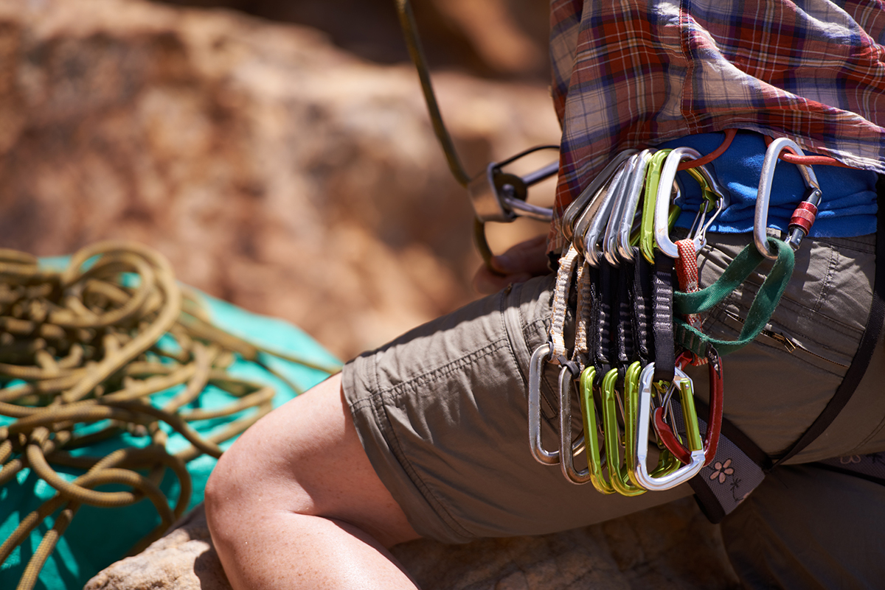

Essential Climbing Gear

Carabiners
Carabiners are essential for climbing and are used for connecting to anchors, connecting a climber to their rope, and attaching ropes to harnesses.

Rope and Harnesses
Essential safety equipment used for managing falls, supporting a climber, and for belaying and rappelling.
Safety Best Practices
Climb with a Partner
Know Your Limits
Double Check Your Gear
Double Check the Weather
Communicate
Respect the Environment